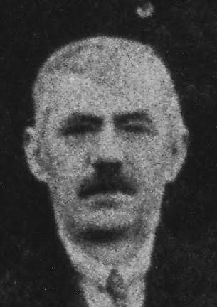

Gemeenteraadsverkiezingen
In 1932 wordt Sooi, samen met Jan Van Thillo, voor het eerst verkozen als gemeenteraadslid, dit tot 1939. Beide socialisten schenken hun zitpenning aan de openbare onderstand, schoorvoetend gevolgd door de andere raadsleden.
In de jaren 30 steekt het fascisme de kop op, Franco, Mussolini en Hitler komen aan de macht en socialisten waarschuwen voor het dreigend oorlogsgeweld.
In 1934 verbiedt de burgemeester een openlucht meeting van de Belgische Werklieden Partij op 11 november aan het monument der gesneuvelden op het Heuvelplein.
In 1937 neemt de Socialistische turnkring Volharding deel aan de Internationale ArbeidersOlympiade te Antwerpen.
Bij de volgende gemeenteraadsverkiezingen in 1939 komt de BWP 11 stemmen te kort voor het behoud van haar 2 mandatarissen Sooi moet afhaken en Jantje Van Thillo is de enige verkozene.
